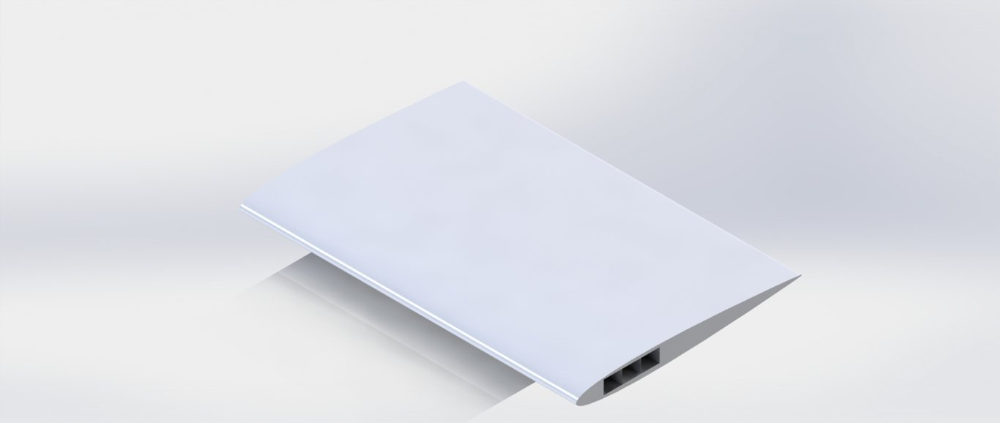

UFSM · Santa Maria, Brazil · 2020
Kit educativo de minifoguete
Um kit educativo de minifoguete de baixo custo para levar atividades práticas aeroespaciais às escolas públicas.
Abrir
Emblema da missão · 2023Uma ferramenta em Python que construímos ao longo de três trabalhos para analisar uma asa: das cargas de voo à flexão, torção e flambagem.
Este projeto nasceu na disciplina de Análise de Estruturas Aeronáuticas da UFSM, em 2023. A aeronave tem uma asa retangular de 12 m de envergadura, corda de 2 m, perfil NACA 63A415 e massa máxima de 5.500 kg.
Dentro da asa há uma caixa com três células. É ela que sustenta as cargas da asa. Os painéis superior e inferior são de alumínio 7075-T6, e as quatro almas são de titânio Ti-6Al-4V.
Ao longo de três trabalhos, construímos uma ferramenta em Python que calcula as cargas nessa caixa, as tensões que elas causam e quantas nervuras e reforçadores são necessários para evitar a flambagem dos painéis. Eu escrevi o código.
Figuras e resultados dos trabalhos originais. As formas e deformações 3D são esquemáticas; o laboratório interativo contém o modelo revisado.
A caixa foi verificada nos cinco vértices do envelope de voo. Clique em um ponto para ver a tensão de flexão que ele provoca na raiz da asa.
A linha vermelha tracejada é a linha neutra, onde a tensão é zero. A tensão aumenta nos cantos mais distantes dela. Nos nossos resultados, quanto mais o ângulo se aproximava de 90°, menor era o pico. P1 foi o caso mais crítico.
A linha vermelha tracejada é a linha neutra, onde a tensão é zero. A tensão aumenta nos cantos mais distantes dela. Nos nossos resultados, quanto mais o ângulo se aproximava de 90°, menor era o pico. P1 foi o caso mais crítico.
A linha vermelha tracejada é a linha neutra, onde a tensão é zero. A tensão aumenta nos cantos mais distantes dela. Nos nossos resultados, quanto mais o ângulo se aproximava de 90°, menor era o pico. P1 foi o caso mais crítico.
A linha vermelha tracejada é a linha neutra, onde a tensão é zero. A tensão aumenta nos cantos mais distantes dela. Nos nossos resultados, quanto mais o ângulo se aproximava de 90°, menor era o pico. P1 foi o caso mais crítico.
A linha vermelha tracejada é a linha neutra, onde a tensão é zero. A tensão aumenta nos cantos mais distantes dela. Nos nossos resultados, quanto mais o ângulo se aproximava de 90°, menor era o pico. P1 foi o caso mais crítico.
As setas vermelhas mostram a sustentação e as azuis o arrasto em cada estação, usando a distribuição de Schrenk. O arrasto aparece cinco vezes maior para facilitar a visualização.
Somar a sustentação da ponta para a raiz fornece a força cortante; somar a força cortante fornece o momento fletor. Ambos são máximos na raiz. A deformação na vista 3D está ampliada.
O momento de arfagem (cm = −0,078) é distribuído uniformemente pela envergadura. Assim, o torque cresce linearmente de zero na ponta até o máximo na raiz. A torção na vista 3D está ampliada.
As setas vermelhas mostram a sustentação e as azuis o arrasto em cada estação, usando a distribuição de Schrenk. O arrasto aparece cinco vezes maior para facilitar a visualização.
Somar a sustentação da ponta para a raiz fornece a força cortante; somar a força cortante fornece o momento fletor. Ambos são máximos na raiz. A deformação na vista 3D está ampliada.
O momento de arfagem (cm = −0,078) é distribuído uniformemente pela envergadura. Assim, o torque cresce linearmente de zero na ponta até o máximo na raiz. A torção na vista 3D está ampliada.
As setas vermelhas mostram a sustentação e as azuis o arrasto em cada estação, usando a distribuição de Schrenk. O arrasto aparece cinco vezes maior para facilitar a visualização.
Somar a sustentação da ponta para a raiz fornece a força cortante; somar a força cortante fornece o momento fletor. Ambos são máximos na raiz. A deformação na vista 3D está ampliada.
O momento de arfagem (cm = −0,078) é distribuído uniformemente pela envergadura. Assim, o torque cresce linearmente de zero na ponta até o máximo na raiz. A torção na vista 3D está ampliada.
As setas vermelhas mostram a sustentação e as azuis o arrasto em cada estação, usando a distribuição de Schrenk. O arrasto aparece cinco vezes maior para facilitar a visualização.
Somar a sustentação da ponta para a raiz fornece a força cortante; somar a força cortante fornece o momento fletor. Ambos são máximos na raiz. A deformação na vista 3D está ampliada.
O momento de arfagem (cm = −0,078) é distribuído uniformemente pela envergadura. Assim, o torque cresce linearmente de zero na ponta até o máximo na raiz. A torção na vista 3D está ampliada.
As setas vermelhas mostram a sustentação e as azuis o arrasto em cada estação, usando a distribuição de Schrenk. O arrasto aparece cinco vezes maior para facilitar a visualização.
Somar a sustentação da ponta para a raiz fornece a força cortante; somar a força cortante fornece o momento fletor. Ambos são máximos na raiz. A deformação na vista 3D está ampliada.
O momento de arfagem (cm = −0,078) é distribuído uniformemente pela envergadura. Assim, o torque cresce linearmente de zero na ponta até o máximo na raiz. A torção na vista 3D está ampliada.
O momento de arfagem torce a caixa. Cada célula resiste com um fluxo de cisalhamento ao redor de suas paredes. O cálculo impõe a mesma taxa de torção às três células e encontra o fluxo em cada uma.
A célula central carrega mais. As almas internas recebem apenas a diferença entre os fluxos de duas células, por isso carregam menos. Paredes mais finas resultaram em tensões de cisalhamento maiores.
Painéis finos sob compressão se deformam lateralmente muito antes de o metal romper. Isso é flambagem. Partimos do pico de compressão em P1, 229,1 MPa, aplicamos um fator de segurança de 2,5 e exigimos que cada painel suportasse 572,8 MPa. Altere a quantidade de peças abaixo e veja, em vermelho, onde a estrutura perde estabilidade.
A compressão atua ao longo da envergadura. Cada reforçador divide o painel em faixas mais estreitas, que precisam de tensões muito maiores para flambar: a tensão crítica cresce com (t/b)².
A compressão atua ao longo da envergadura. Cada reforçador divide o painel em faixas mais estreitas, que precisam de tensões muito maiores para flambar: a tensão crítica cresce com (t/b)².
A compressão atua ao longo da envergadura. Cada reforçador divide o painel em faixas mais estreitas, que precisam de tensões muito maiores para flambar: a tensão crítica cresce com (t/b)².
A linha neutra inclinada também coloca as almas externas em compressão. Reforçadores ao longo da alma dividem seus 0,5 m de altura em faixas menores que mantêm sua forma.
A linha neutra inclinada também coloca as almas externas em compressão. Reforçadores ao longo da alma dividem seus 0,5 m de altura em faixas menores que mantêm sua forma.
A linha neutra inclinada também coloca as almas externas em compressão. Reforçadores ao longo da alma dividem seus 0,5 m de altura em faixas menores que mantêm sua forma.
Um reforçador se comporta como uma coluna longa. As nervuras o apoiam ao longo da envergadura, limitando a flexão ao trecho entre dois apoios. Nervuras mais próximas significam uma coluna mais curta e uma tensão crítica maior.
Um reforçador se comporta como uma coluna longa. As nervuras o apoiam ao longo da envergadura, limitando a flexão ao trecho entre dois apoios. Nervuras mais próximas significam uma coluna mais curta e uma tensão crítica maior.
Um reforçador se comporta como uma coluna longa. As nervuras o apoiam ao longo da envergadura, limitando a flexão ao trecho entre dois apoios. Nervuras mais próximas significam uma coluna mais curta e uma tensão crítica maior.
Dividi a primeira versão da ferramenta em módulos pequenos, com todas as entradas em um só lugar. Foi isso que permitiu adicionar torção e flambagem depois, sem começar do zero: cada novo trabalho acrescentava apenas um ou dois módulos ao mesmo código.
Projetos
Passe o mouse ou use o teclado
UFSM · Santa Maria, Brazil · 2020
Um kit educativo de minifoguete de baixo custo para levar atividades práticas aeroespaciais às escolas públicas.
AbrirCarancho Aerodesign · UFSM · 2020–2022
Na Carancho Aerodesign, liderei o bloco estrutural de três departamentos: análise estrutural, cargas e aeroelasticidade e CAD.
AbrirUFSM · 2021
Um jogo de damas espaciais em C e Allegro 5. Criado em 2021, restaurado em 2026 e jogável aqui com o mesmo motor em C.
AbrirIndependent project · 2021
Guias interativos para explorar conceitos de mecânica dos sólidos por meio de código e gráficos.
AbrirWebservatório · UFSM · 2021–2022
Coordenação estudantil do Webservatório, projeto de divulgação da astronomia que conecta o público a especialistas com observações e debates online.
AbrirUFSM · Santa Maria, Brazil · 2022–2024
Ajudei a criar a Escola Piloto de Engenharia Aeroespacial na UFSM, conectando estudantes, profissionais e escolas públicas por meio do aprendizado prático.
AbrirUFSM · 2023
Uma ferramenta em Python construída ao longo de três trabalhos para analisar uma asa: das cargas de voo à flexão, torção e flambagem.
Você está aquiGrenoble INP – Phelma · 2023–2024
Um kernel de baixo nível para explorar a interação entre hardware, interrupções e processos.
AbrirGrenoble INP – Phelma · 2023–2024
Modelagem de cadeias de transmissão de rádio e filtros para dispositivos conectados.
AbrirGrenoble INP – Phelma · 2023–2024
Projeto de engenharia de software com seis integrantes para criar um compilador Java para um subconjunto de uma linguagem.
AbrirGrenoble INP – Phelma · 2023–2024
Um corretor ortográfico comparando estruturas de dados para busca rápida e uso eficiente de memória.
AbrirGrenoble INP – Phelma · 2023–2024
Componentes digitais em VHDL, de um banco de memória baseado em registradores à detecção de pacotes Ethernet.
AbrirGrenoble INP – Phelma · 2024
Software embarcado de tempo real para um protótipo físico de CubeSat que orienta seus painéis solares em direção à luz.
AbrirGrenoble INP – Phelma · 2024
Injeção de falhas Single Event Upset para avaliar o hardware em ambientes sujeitos à radiação.
AbrirGrenoble INP – Phelma · 2024
Um filtro de imagem em SoC, conectando modelos de alto nível ao projeto de hardware.
AbrirGrenoble INP – Phelma · 2024
Especificação, implementação e validação de um filtro digital em VHDL.
AbrirGrenoble INP – Phelma · 2024
Modelagem e simulação de controle em tempo real de uma suspensão magnética em torno do equilíbrio.
AbrirGrenoble INP – Phelma · 2024
Simulação MATLAB de uma cadeia de transmissão digital 2-PAM com filtros analógicos e digitais.
AbrirGrenoble INP – Phelma · 2024
Projeto de empreendedorismo em equipe de seis pessoas: um aplicativo para compartilhar experiências e iniciar atividades.
AbrirGrenoble INP – Phelma · 2024–2025
Validação da extensão de 128 bits do processador CVA6, verificando instruções de 32, 64 e 128 bits.
AbrirGrenoble INP – Phelma · 2024–2025
Software bare-metal de tempo real para motores CC, servo de direção e câmera linear em um veículo seguidor de linha.
AbrirIndependent project / UFSM · 2025–2026
Uma plataforma educacional no navegador para explorar software de voo da NASA sem uma configuração local complexa, pensada para universidades e equipes estudantis de satélites em países emergentes.
Abrir